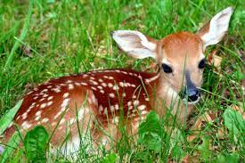
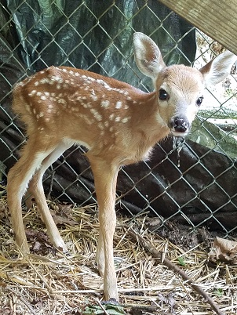
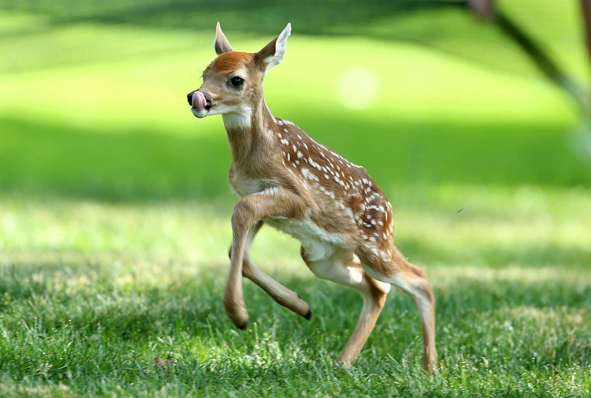
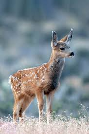
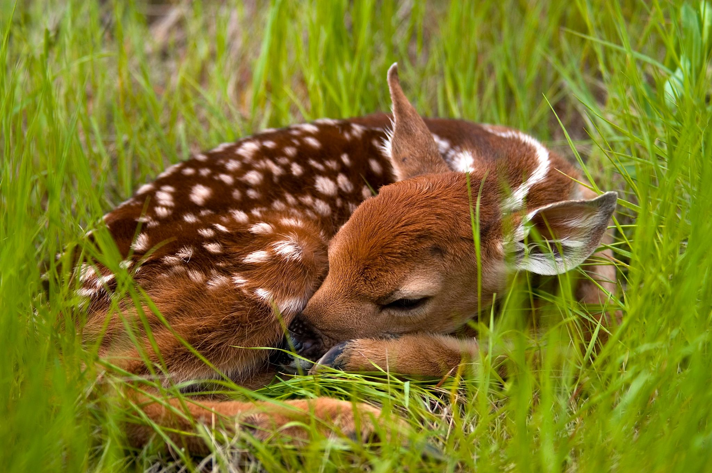
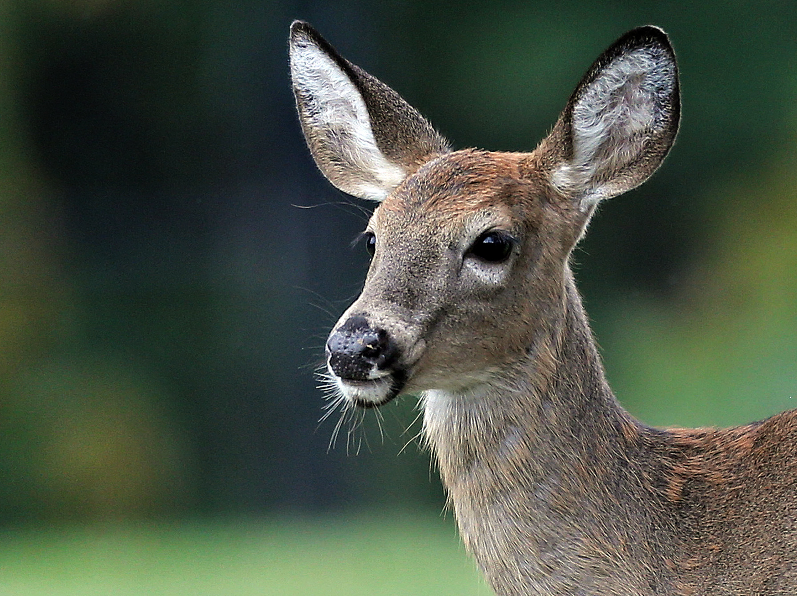

Deer or true deer are hoofed ruminant mammals forming the family Cervidae. The two main groups of deer are the Cervinae, including muntjac, elk, red deer, and fallow deer; and the Capreolinae, including reindeer, white-tailed deer, roe deer, and moose.

Deer appear in art from Paleolithic cave paintings onwards, and they have played a role in mythology, religion, and literature throughout history, as well as in heraldry, such as red deer that appear in the coat of arms of Åland. Their economic importance includes the use of their meat as venison, their skins as soft, strong buckskin, and their antlers as handles for knives. Deer hunting has been a popular activity since the Middle Ages and remains a resource for many families today.

The word deer was originally broad in meaning, becoming more specific with time. Old English dēor and Middle English der meant a wild animal of any kind. Cognates of Old English dēor in other dead Germanic languages have the general sense of animal, such as Old High German tior, Old Norse djur or dȳr, Gothic dius, Old Saxon dier, and Old Frisian diar. This general sense gave way to the modern English sense by the end of the Middle English period, around 1500. All modern Germanic languages save English and Scots retain the more general sense: for example, German Tier and Norwegian dyr mean animal

For many types of deer in modern English usage, the male is a buck and the female a doe, but the terms vary with dialect, and according to the size of the species. The male red deer is a stag, while for other large species the male is a bull, the female a cow, as in cattle. In older usage, the male of any species is a hart, especially if over five years old, and the female is a hind, especially if three or more years old. The young of small species is a fawn and of large species a calf; a very small young may be a kid. A castrated male is a havier. A group of any species is a herd. The adjective of relation is cervine; like the family name Cervidae, this is from Latin: cervus, meaning stag or deer.

Deer live in a variety of biomes, ranging from tundra to the tropical rainforest. While often associated with forests, many deer are ecotone species that live in transitional areas between forests and thickets (for cover) and prairie and savanna (open space). The majority of large deer species inhabit temperate mixed deciduous forest, mountain mixed coniferous forest, tropical seasonal/dry forest, and savanna habitats around the world. Clearing open areas within forests to some extent may actually benefit deer populations by exposing the understory and allowing the types of grasses, weeds, and herbs to grow that deer like to eat. Access to adjacent croplands may also benefit deer. Adequate forest or brush cover must still be provided for populations to grow and thrive.

Deer are widely distributed, with indigenous representatives in all continents except Antarctica and Australia, though Africa has only one native deer, the Barbary stag, a subspecies of red deer that is confined to the Atlas Mountains in the northwest of the continent. Another extinct species of deer, Megaceroides algericus, was present in North Africa until 6000 years ago. Fallow deer have been introduced to South Africa. Small species of brocket deer and pudús of Central and South America, and muntjacs of Asia generally occupy dense forests and are less often seen in open spaces, with the possible exception of the Indian muntjac. There are also several species of deer that are highly specialized and live almost exclusively in mountains, grasslands, swamps, and "wet" savannas, or riparian corridors surrounded by deserts. Some deer have a circumpolar distribution in both North America and Eurasia. Examples include the caribou that live in Arctic tundra and taiga (boreal forests) and moose that inhabit taiga and adjacent areas. Huemul deer (taruca and Chilean huemul) of South America's Andes fill the ecological niches of the ibex and wild goat, with the fawns behaving more like goat kids.